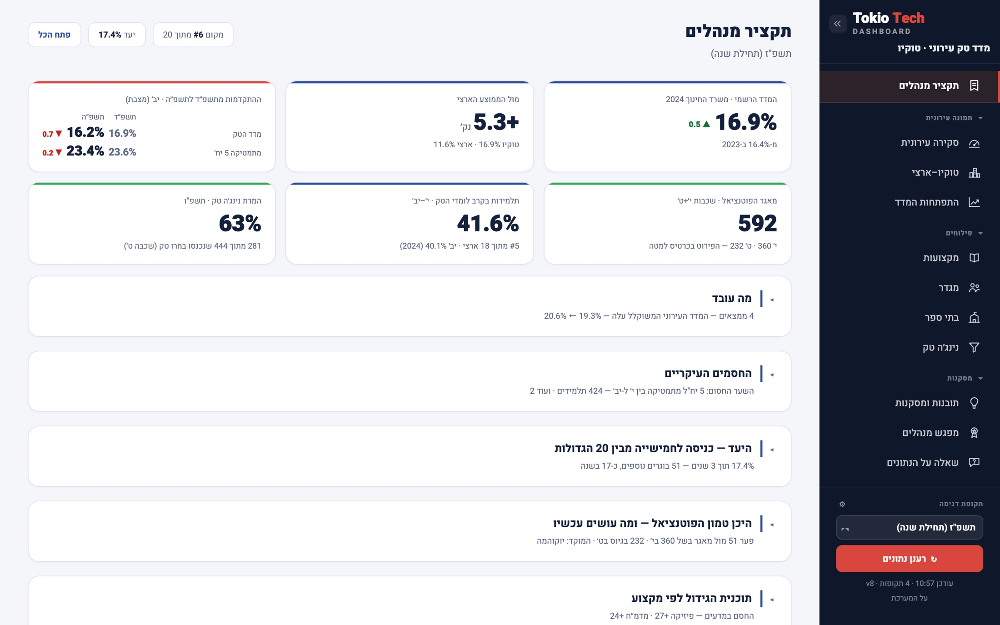
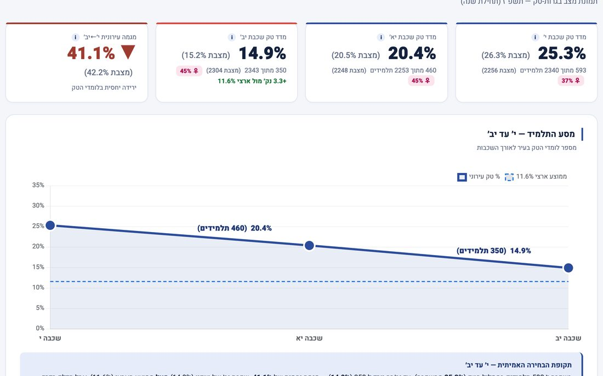
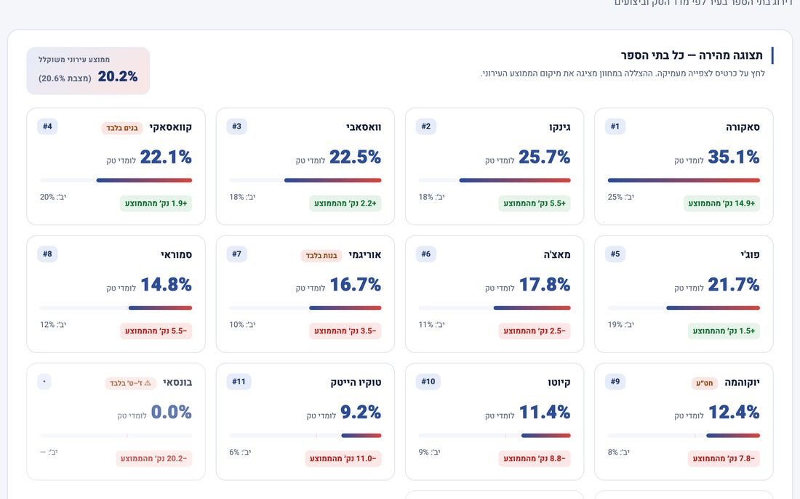
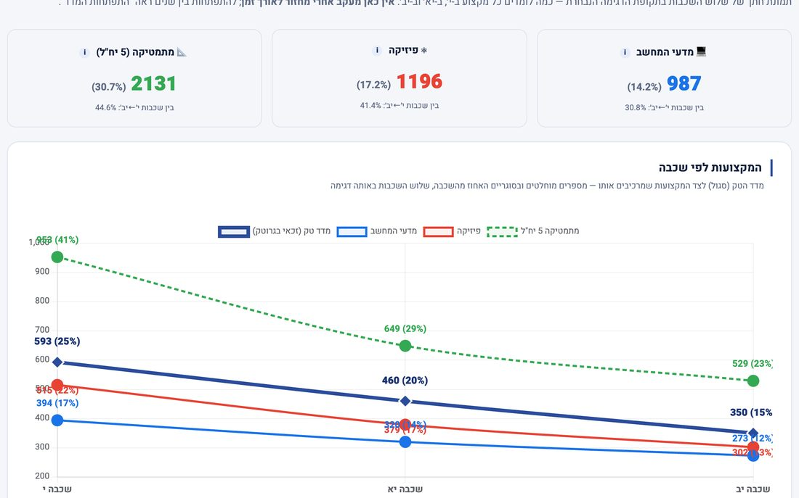
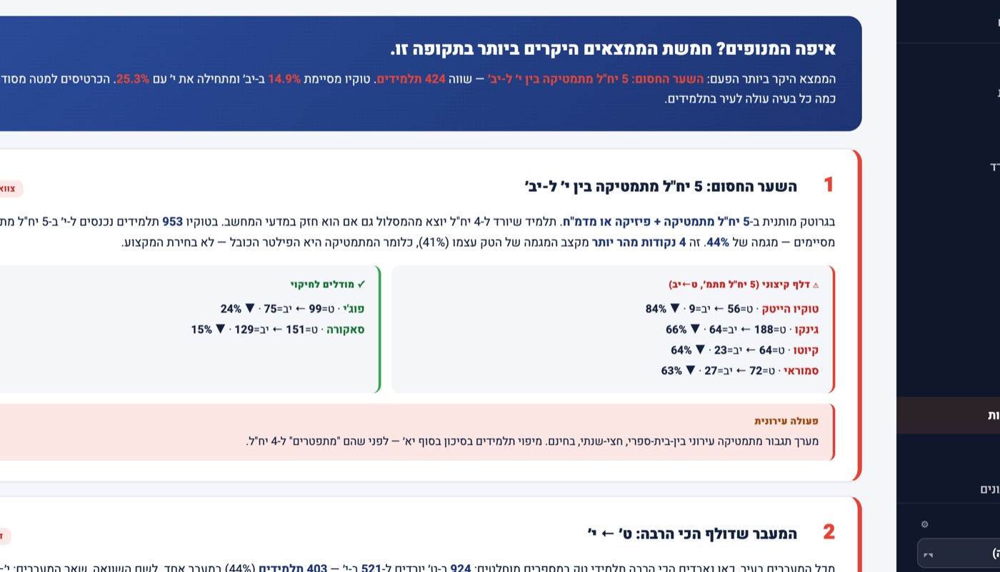
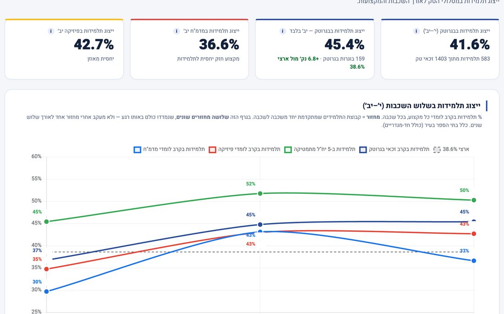
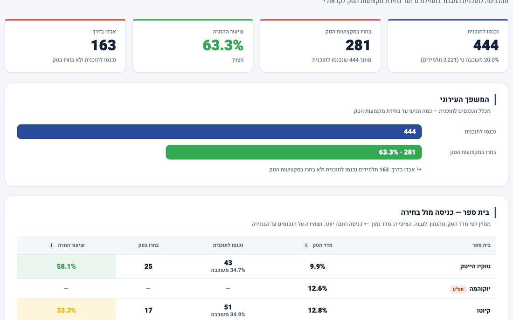
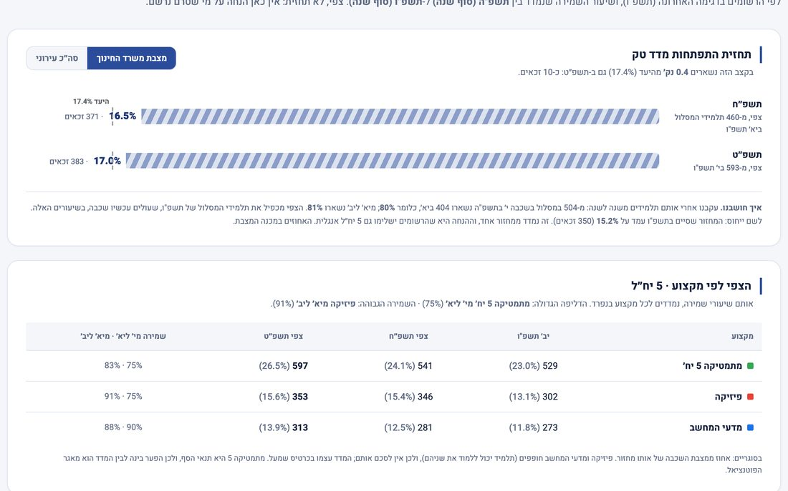
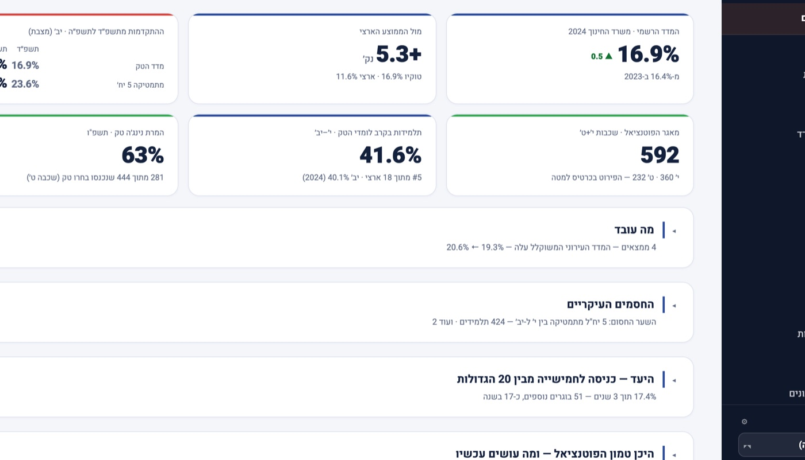

המדד יפורסם בסוף השנה.ההשפעה עליו מתחילה היום.
Tokio Tech Dashboard היא מערכת ניהול חכמה למנהלי אגפי חינוך, שהופכת את נתוני בגרות־טק מתוצאה שמודדים לתהליך שאפשר לנהל.
המערכת מזהה איפה הרשות מאבדת תלמידים במסלול הטק, באילו בתי ספר, שכבות ומקצועות, ומראה היכן עדיין אפשר להתערב כדי לשנות את התוצאה.
ללא פרויקט IT. ללא החלפת מערכות. מתחילים מהנתונים שכבר קיימים אצלכם.

כמה תלמידים פרשו השנה ממסלול הטק בעיר שלכם? האם ניתן היה לדעת על כך בזמן, ולפעול?
מדד בגרות־טק הוא תוצאה של תהליך.
- תלמיד נכנס למסלול.
- בוחר מקצועות.
- ממשיך או נושר.
- עובר מ־5 ל־4 יח"ל.
- בית ספר אחד מצליח לשמר תלמידים, אחר מאבד אותם.
אבל כשהתוצאה הסופית מתפרסמת, ההזדמנות להתערב כבר מאחורינו. Tokio משנה את נקודת המבט: במקום למדוד את התוצאה, לנהל את הדרך אליה.
מדוח שנתי למערכת ניהול שוטפת
פעם
- דוח שנתי
- מדד סופי
- השוואה לרשויות
- "צריך להשתפר"
עם Tokio
- נתוני תלמידים
- זיהוי דלף
- איתור בתי ספר ומקצועות
- זיהוי נקודת התערבות
- פעולה
- מעקב אחר התוצאה
לא רק: "מה המדד שלנו?"
אלא:"איפה אנחנו יכולים לשנות אותו?"
Tokio מפרקת את המדד העירוני לגורמים שמנהל אגף החינוך יכול לפעול עליהם.
איפה?
איזה בית ספר?
מה?
איזה מקצוע, איזו שכבה?
כמה?
כמה תלמידים יכולים לשנות את התוצאה?
המערכת לא רק מראה איפה הבעיה. היא מכמתת את ההזדמנות.
- בית ספר איפה
- שכבה מתי
- מקצוע במה
- תלמידים בסיכון כמה
- פער מהיעד מה זה שווה
- נקודת התערבות מה עושים
במקום לומר:"צריך לחזק את המתמטיקה."
אפשר להגיע לשיחה ניהולית מדויקת:"בבית הספר הזה נמצאים 24 תלמידים שיכולים להשפיע על התוצאה העירונית."
תמונה אחת של העיר. עומק עד רמת בית הספר.

תמונת מצב עירונית
מדד הטק, מגמה, השוואה ארצית ופער מהיעד.

השוואת בתי ספר
לראות מי מוביל, מי משתפר והיכן נמצאים הפערים.

פילוח מקצועות
מעקב אחר מתמטיקה, פיזיקה, מדעי המחשב ומקצועות טק נוספים.

זיהוי דלף
לזהות באיזה שלב תלמידים יוצאים מהמסלול.

פילוח מגדרי
להבין היכן נמצאות התלמידות במסלולי הטק והיכן קיימים פערים.

נינג'ה טק
לעקוב אחר הדרך מתוכניות התגבור ועד הבחירה בפועל במקצועות הטק.

תחזית מחזור
להבין מה צפוי לקרות אם המגמות הנוכחיות יימשכו.

תובנות
המערכת מזהה מגמות, צווארי בקבוק ונקודות להתערבות.
אותה ישיבת מנהלים. שיחה אחרת לגמרי.
"בבית ספר X, בשכבה י"א, 24 תלמידים נמצאים בנקודת סיכון במתמטיקה 5 יח"ל."
- מדויק.
- מדיד.
- ניתן לפעולה.
"אנחנו צריכים לשפר את נתוני הטק."
- כללי.
- קשה למדוד.
- קשה לתעדף.
- קשה לדעת איפה להתחיל.
זה ההבדל בין נתון לבין החלטה.
להשקיע איפה שההשפעה הגדולה ביותר.
משאבי החינוך מוגבלים. שעות תגבור, מורים, תוכניות, הכשרות ותקציבים צריכים להגיע למקומות שבהם הם יכולים לייצר שינוי.
המערכת לא מחליטה בשבילכם איפה להשקיע. היא נותנת לכם את הנתונים כדי להחליט טוב יותר.
Tokio מאפשרת לזהות:
- איזו שכבה צריכה התערבות
- איזה בית ספר זקוק לליווי
- איזה מקצוע הוא צוואר הבקבוק
- כמה תלמידים נמצאים בנקודת ההשפעה
- היכן שינוי קטן יחסית יכול לייצר השפעה עירונית משמעותית
מתחילים מהנתונים שכבר קיימים אצלכם.
מעלים נתונים
הנתונים מוזנים לגיליון פשוט שבשליטת אגף החינוך.
Tokio מנתחת
המערכת מחשבת את המדדים, מזהה מגמות, פערים ונקודות התערבות.
מנהלים פעולה
אגף החינוך מקבל תמונת מצב ברורה ויכול לעקוב אחר השינוי לאורך השנה.
נבנה עבור מי שמנהל את התמונה הגדולה.
מנהל/ת אגף החינוך
תמונה עירונית אחת לקבלת החלטות.
מנהלי בתי הספר
הבנה ברורה של המקום שבו אפשר להשפיע.
ראש העיר והנהלת הרשות
מעקב אחר יעד עירוני באמצעות נתונים.
הנתונים כבר קיימים. השאלה היא מה עושים איתם.
Tokio מחברת בין שלושתם.
כך נראית שליטה במדד הטק העירוני.
- 1מדד עירוני
- 2פער מהיעד
- 3מגמת שינוי
- 4בתי ספר
- 5מקצועות
- 6תלמידים
- 7תחזית
- 8תובנות
Dashboard הוא המקום שבו רואים את הנתונים.
Tokio היא המקום שבו מנהלים אותם.
MUNICIPAL TECH EDUCATION INTELLIGENCEרוצים לראות את מדד הטק של הרשות שלכם?
ב־45 דקות נציג לכם את המערכת, נראה איך היא מזהה את צווארי הבקבוק, ונראה כיצד ניתן להפעיל אותה ברשות שלכם.
לתיאום הדגמהאפשר להגיע עם נתוני 3 בתי ספר ולקבל תמונת מצב ראשונית כבר בפגישה.
שאלות נפוצות
האם צריך להחליף את מערכות המידע הקיימות?
לא. Tokio נועדה לעבוד כשכבת ניהול וניתוח מעל הנתונים הקיימים.
האם נדרש פרויקט IT?
לא. המערכת נבנתה כך שאפשר להתחיל מנתונים המוזנים לגיליון פשוט.
מי משתמש במערכת?
בעיקר מנהלי אגפי חינוך ומנהלי בתי ספר, בהתאם למודל העבודה של הרשות.
האם ניתן להתחיל בפיילוט?
כן. ניתן להתחיל עם מספר בתי ספר, לבחון את הערך ולהרחיב בהמשך.
האם הנתונים נשארים בשליטת הרשות?
כן. הנתונים יושבים בגיליון של אגף החינוך, והמערכת קוראת אותו ומחשבת ממנו בלי לשמור עותק. היא עובדת עם מספרים מצרפיים לפי בית ספר ושכבה, בלי שמות תלמידים. מודל אבטחת המידע המלא מוגדר ומאושר מול כל רשות לפי המדיניות שלה.
מי עומד מאחורי המערכת
רמי שקד. מפתח ומטמיע את Tokio Tech Dashboard.
עובד עם מינהלי חינוך ברשויות מקומיות על חדשנות, טכנולוגיה ושימוש בנתונים לקבלת החלטות. המערכת נולדה מעבודה שוטפת עם מינהל חינוך של רשות גדולה, מול ראש העיר ומול מנהלי בתי הספר, והיא פועלת שם היום.